露營車內外完整教學影片
影片連結： YouTube 觀看（RcV0bOU4rLI）
這支影片是露營車內外完整導覽，包含設備位置、操作方式，以及客廳變床等使用教學。
備註：車上目前沒有微波爐（影片中有特別說明）；設備以交車現場為準。
從交車、開車注意事項、電力、冷氣、水箱、衛浴、床鋪、戶外套組到還車檢查，依照實際使用順序整理給你。最下方另附常見問題 Q&A，租車前可以先在這一頁把疑問一次看完。
約 7 分鐘｜台北露營車內外完整導覽，包含床鋪變形與主要設備操作。
影片連結： YouTube 觀看（RcV0bOU4rLI）
這支影片是露營車內外完整導覽，包含設備位置、操作方式，以及客廳變床等使用教學。
先把基本資訊整理好，後續預約、報價與行程建議會更順。
預訂前請先確認以下資訊：
交車教學大約 30 分鐘，第一次租露營車也不用擔心，會用實際操作的方式說明。
交車時會說明：
出發前先花幾分鐘看一下外觀位置圖與鑰匙用途，交車時會更容易跟上說明。


露營車車高約 3 公尺（約一層樓），行駛中請隨時留意陸橋、招牌、樹枝、屋簷。
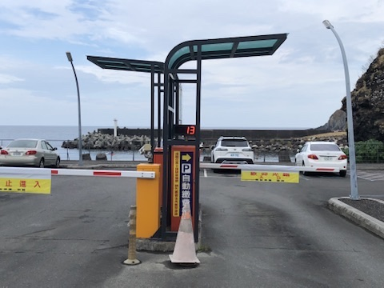

白話來說：白天邊開邊充、晚上有營區電就接電，儘量不要等到沒電才充。
車內有電池可以支援基本用電，例如燈光、手機充電、冰箱與一般設備。如果長時間使用冷氣，耗電會比較快，建議優先選擇可以外接電源的露營區。
一般三天兩夜不開空調，電量通常都夠；若有開空調，冷氣約可使用 8～10 小時。這台車平均充電速度約每小時 7%，在開冷氣時一邊補電是可以的；實務上請避免讓電量低於 10%。
在庫倫電錶附近會有電壓與電量對照表，可以用伏特數大約判斷目前剩餘電量：
| 伏特數 | 大致剩餘電量 |
|---|---|
| 13.5V | 90% 以上 |
| 13.4V | 約 80% |
| 13.3V | 約 70% |
| 13.2V | 約 60% |
另外：中間顯示正數＝充電、負數＝耗電；右邊是目前設備使用的瓦數，數字越高耗電越大。


在庫倫電錶下方有一個櫃門，打開後可以看到藍色旋鈕。這個旋鈕可以控制充電速度。如果露營區限制用電，或只能使用低電量設備，請將旋鈕調到中間或中間以下，降低充電速度，避免跳電。
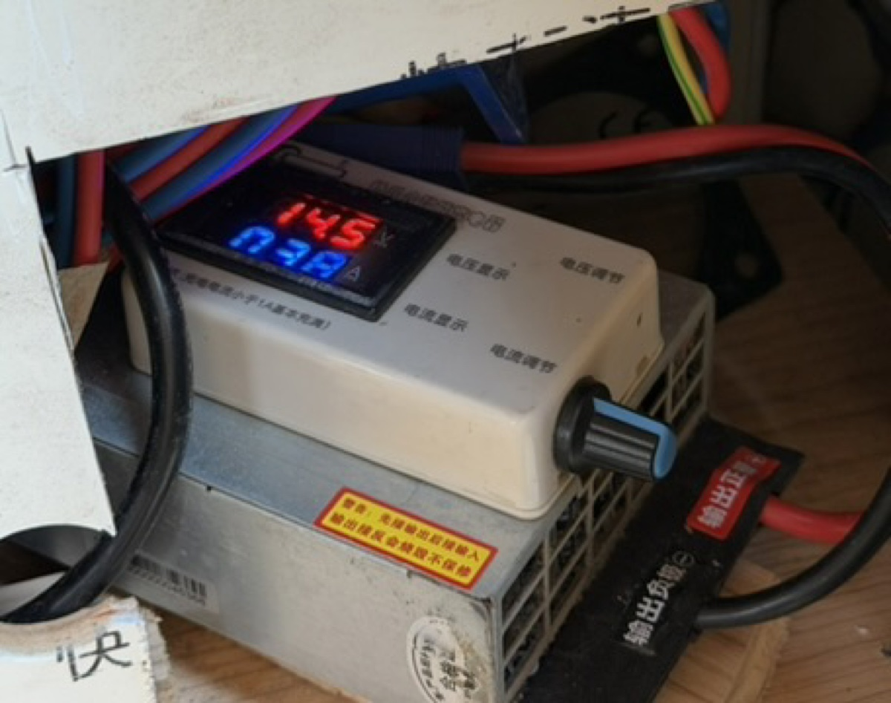
車身左後方艙門有原廠配置的 Yamaha 內建發電機，可在行駛中持續補電，適合在抵達露營區前先把電池補滿。但運轉時車內會比較吵，夜間在非露營區開冷氣睡覺時，請改用紅色外置發電機。
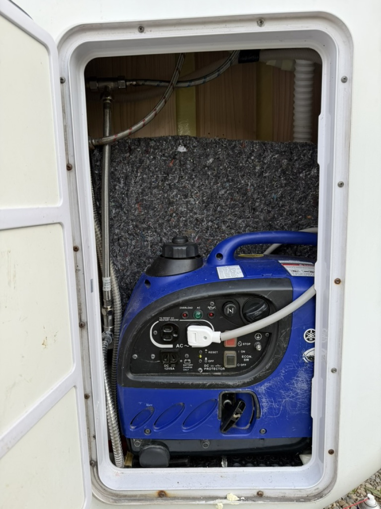
這顆白色兩孔插頭是露營車充電插頭，不論在露營區接電或使用發電機充電都是用同一顆：
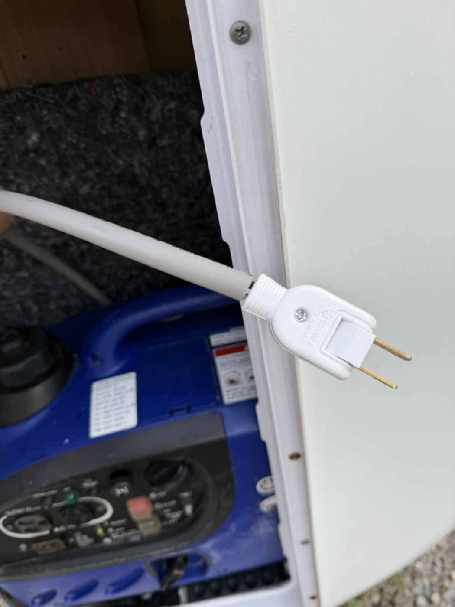
隨車另附一台紅色外置發電機（型號 ASAHI SE2400 Inverter Generator）。外置發電機可搭配延長線放到比較遠的地方（例如海邊石頭堆後方、停車場邊緣空地），讓車內在夜間使用冷氣時不會被噪音吵到，特別適合在非露營區過夜時使用。
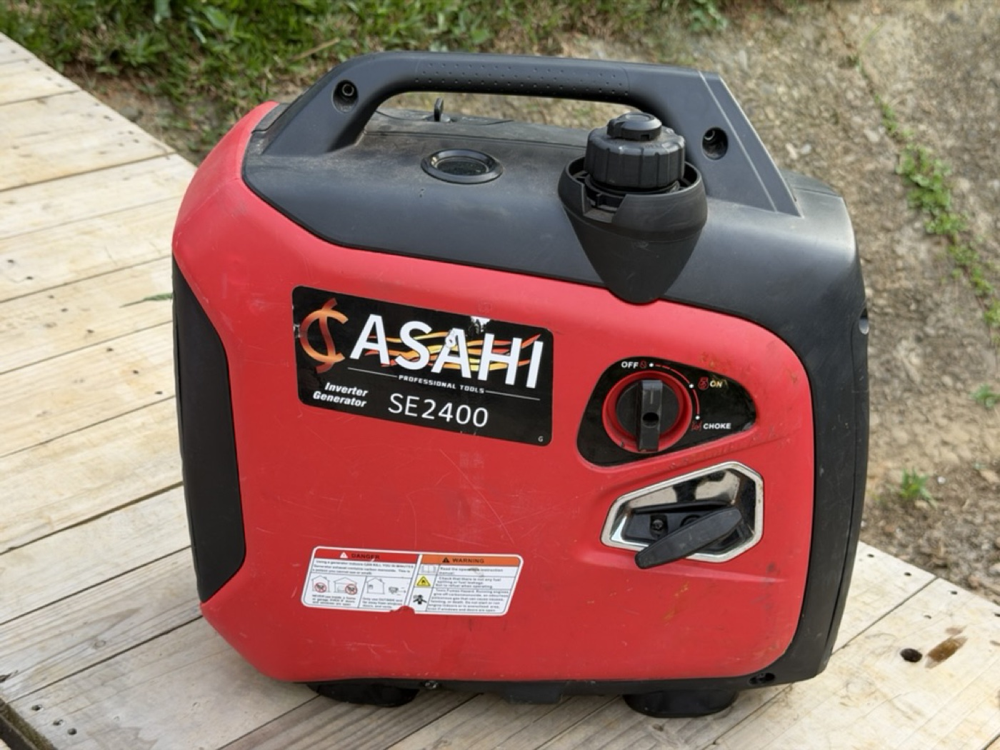
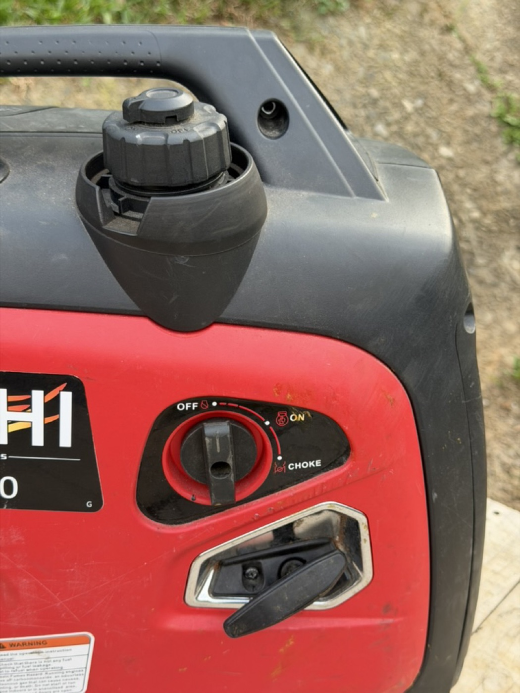
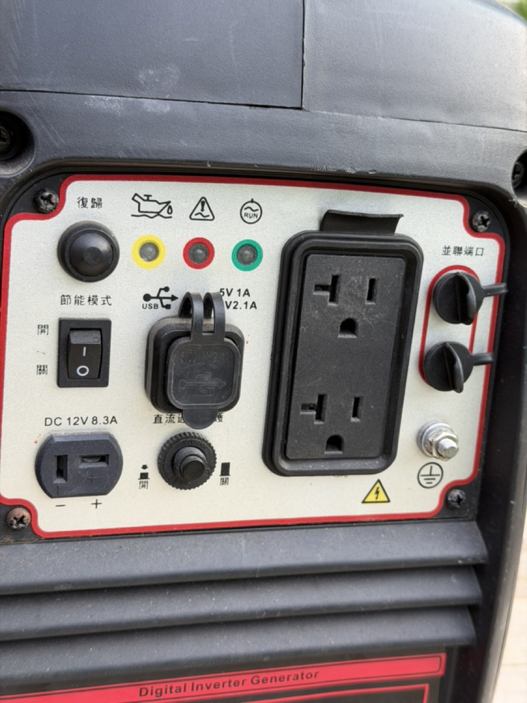
可以洗澡，但不是飯店浴室，不適合長時間大量用水。
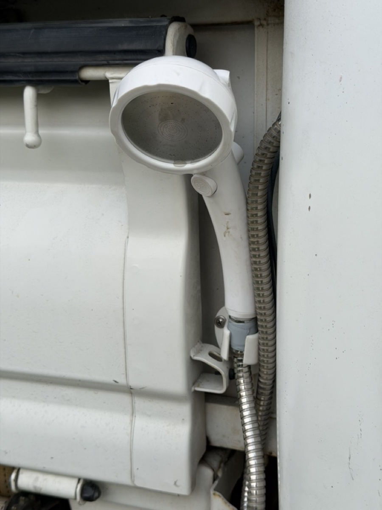
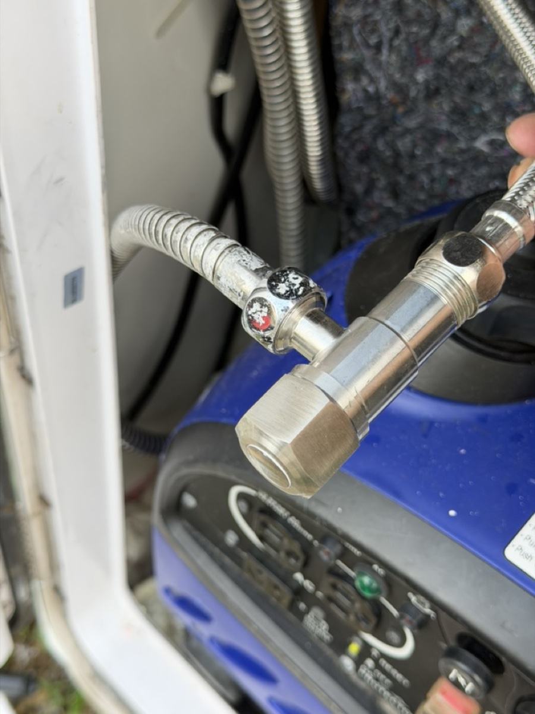

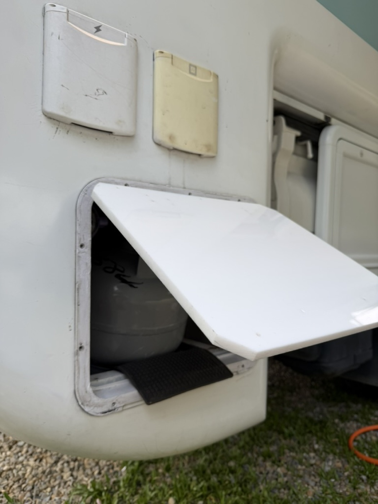
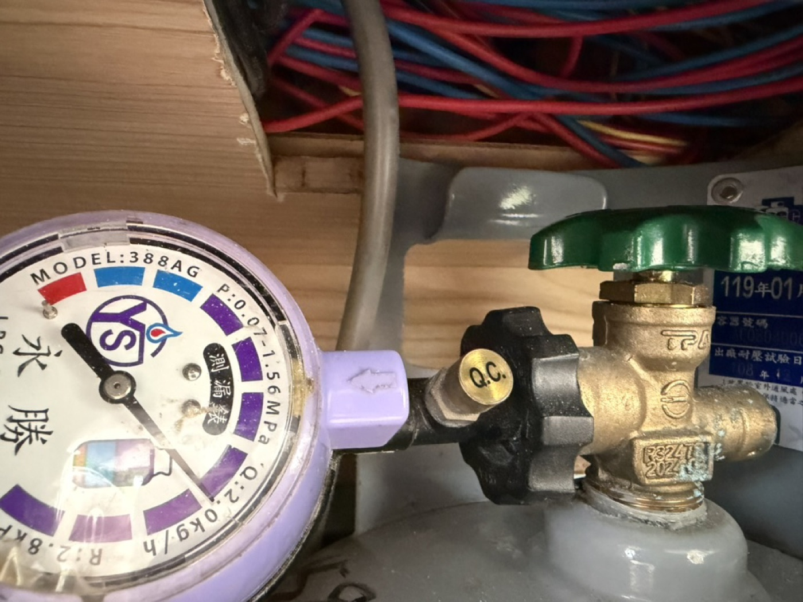
兩張雙人床，一張固定床、一張由餐桌區變形。建議先看影片再對照下方步驟圖。
與本頁最上方的主介紹影片為同一支，方便你在「床鋪」章節直接重播練習。亦可在 YouTube 開啟： 完整教學影片
交車時會再用實車示範一次；若行前提早看過影片，當天會更快進入狀況。
下列為實際車內操作順序示意，可與影片互相對照。


如果你選擇加購或符合贈送條件，可搭配戶外桌椅、燈串、帳篷、拍照佈置等設備。


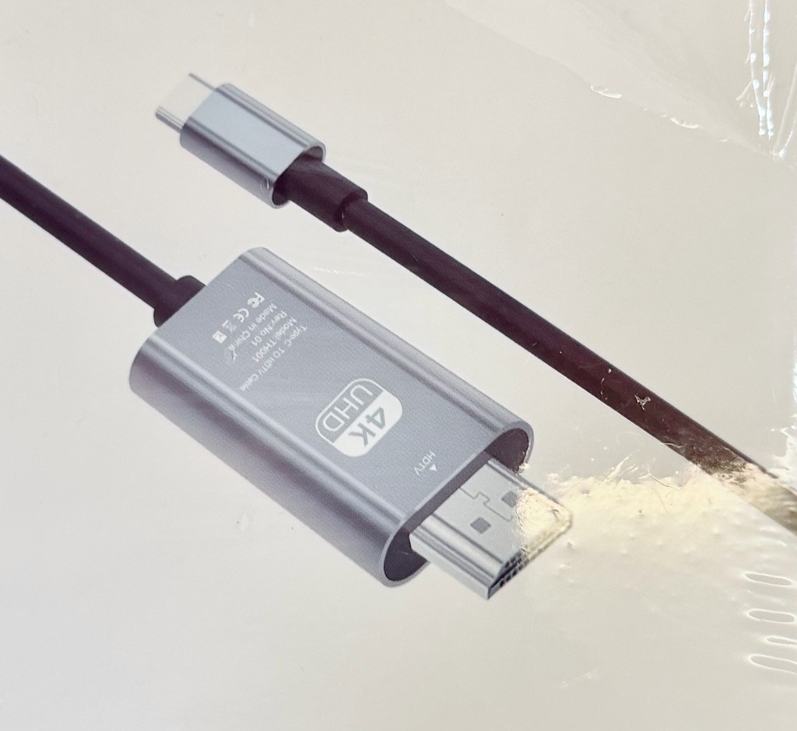
還車前花 5 分鐘對照清單，可以省掉不少押金結算的討論時間。
依類別整理，點擊展開查看答案。
租金、押金、付款與送車範圍的常見問題。
車內合法乘坐、建議睡眠人數。
駕照、車高、行車距離等。
餐具、冰箱、卡式爐、冷氣。
清水、熱水、馬桶。
住宿地點、路邊過夜。
寵物同行、清潔費。
刮傷、屋頂碰撞、保險。